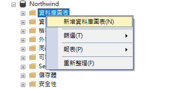
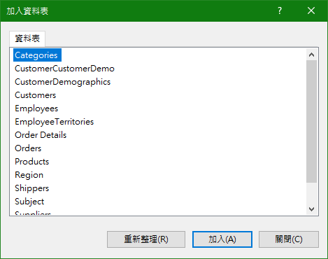
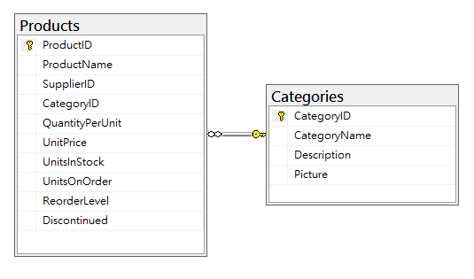
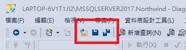
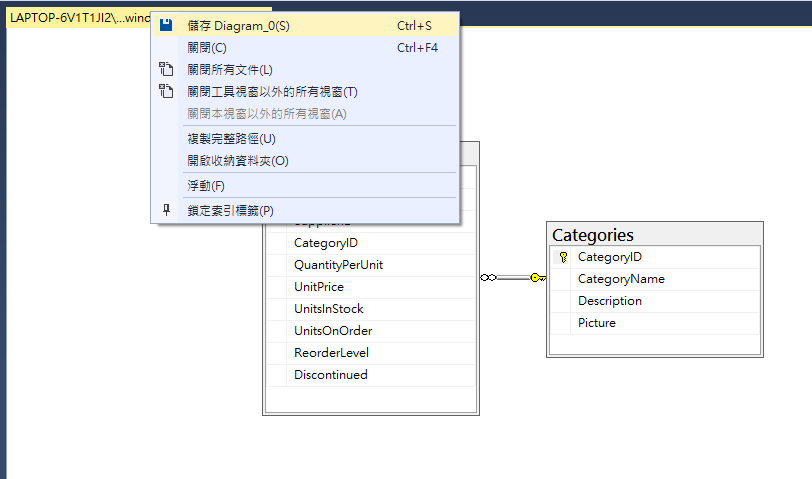
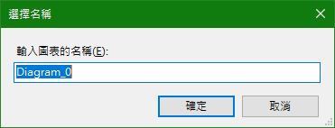
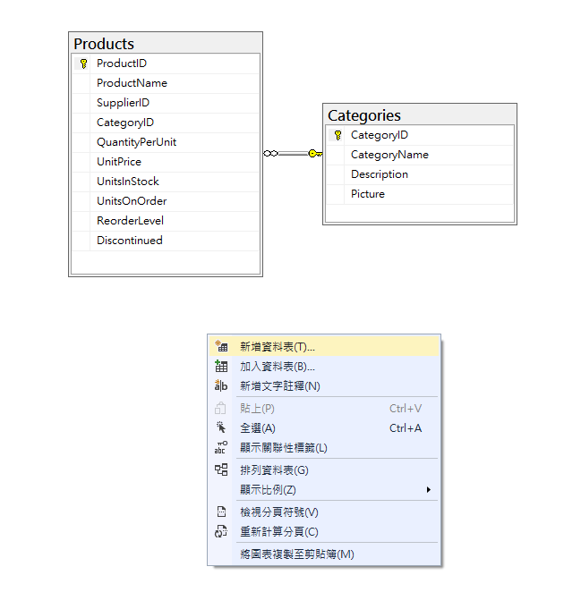
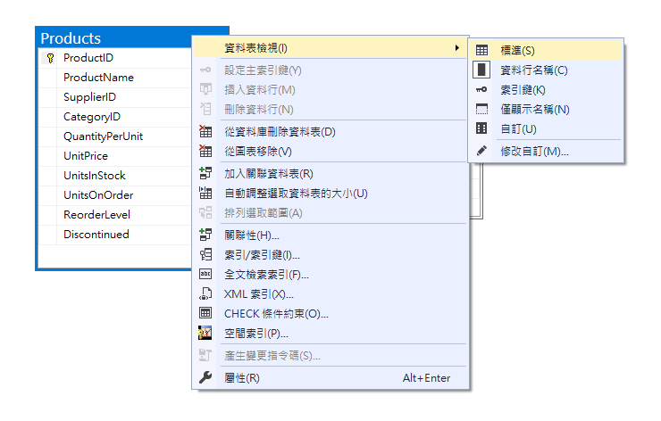
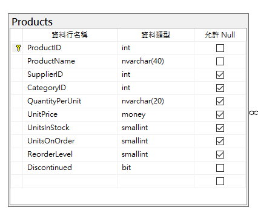

前言
SQL Server Management Studio 提供資料庫圖表功能，為一項視覺化工具，使用圖形與符號來顯示資料表之間的關聯，厲害的是，還可以在資料庫圖表中編輯資料表的屬性、建立索引等功能。
開始
建立方式非常簡單，展開欲新增資料庫圖表的資料庫節點，對［資料庫圖表］執行右鍵

因為 Northwind 已經有建立好的 Table，這邊可先行加入需要使用的資料表，先加入 Products 和 Categories （可使用 Ctrl 來複選），點擊［加入］後視窗貌似不會自己關閉…請手動您的手指在點擊一次［關閉］

在資料庫圖表中可以看到 Products 和 Categories 資料表已經載入，且都是原屬性設定，包括 PK 或 FK 都幫忙建立好。你可以想像資料庫圖表就是一個畫布，可以拖曳已經加入的資料表和關聯性到你覺得方便查閱的位置。

設計好資料庫圖表後記得儲存，不然就白費工夫
你可以 Ctrl＋S 或者使用工具列上的儲存

對查詢視窗標籤執行右鍵選擇第一項儲存…

記得給圖表命名

想再增加資料表怎麼辦？
請自空白處直行右鍵，會看到［新增資料表］及［加入資料表］，如果你想加入現有的資料表，請選擇［加入資料表］；如果是想建立新的資料表，請選［新增資料表］，當選擇新增資料表，就代表新的資料表會從這邊開始建立，前面不是有說有編輯功能嗎？就是這個意思，增加資料行、設置屬性、設置 PK & FK 等…

想要檢視資料型別該怎麼做？
對資料表執行右鍵，指向［資料表檢視］，選擇［標準］

終於看到熟悉的畫面…其他檢視方式也可嘗試變更看看

結語
資料庫圖表在操作上並沒有很複雜，都是以圖形化來呈現及操作，且功能相較少及容易理解，其他沒有介紹的部分可自行嘗試操作及了解。